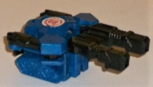
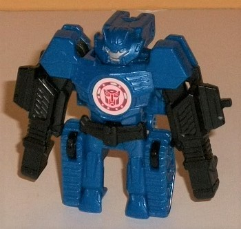
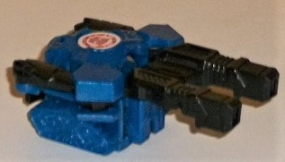
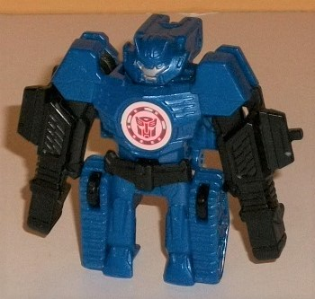
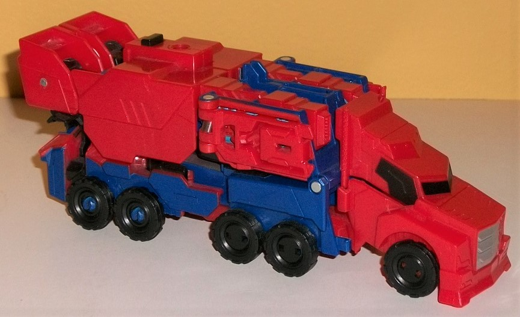
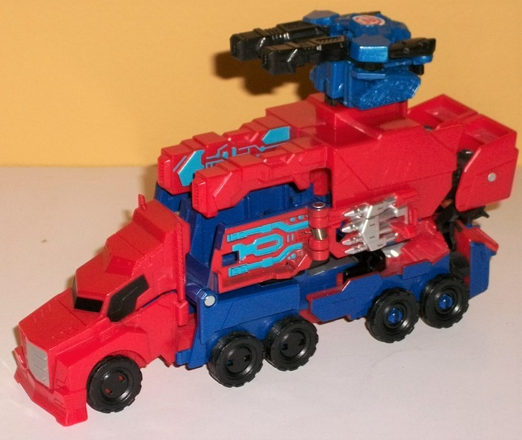
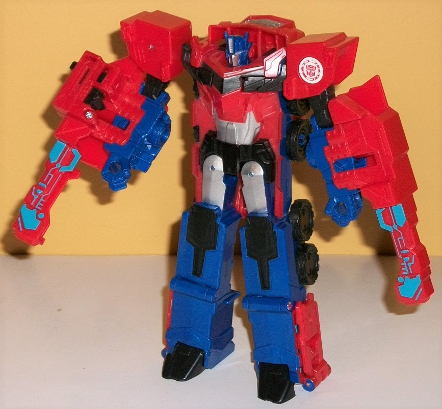

 
Size : Mini-Con
Difficulty of Transformation : Very Easy
Color Scheme : Dark blue, black, and some silver and moderately light blue
Individual Rating: 5.8
Allegiances
: Autobot
 Hi-Test
Hi-Test


Size
: Mini-Con
Difficulty of Transformation
: Very
Easy
Color Scheme
: Dark blue, black,
and some silver and moderately light blue
Individual Rating:
5.8
Hi-Test's alternate
mode is a double-barreled tank. Though man, those barrels are HUGE proportionally--
he does have treads molded into the bottom of this mode, but they're tiny
(though very intricately detailed, with even little wheels 'n such molded
in despite the teeny size). The way the twin barrels are positioned, it
almost looks like this is more of a railgun than a double-barreled blaster
tank, but of course that's up to personal interpretation. I do love the
little details on the guns too, such as the little "spring-like" details
behind the barrels themselves, as if you can almost "see" the barrels recoiling
after each blast. The details on the top of the tank mode, unfortunately,
are way too obviously just Hi-Test's upper body and arms, but with the
head replaced with the cannon. The robot pelvis piece is its own little
piece, interestingly enough, and forms the back "bumper" of this mode.
The color scheme is pretty basic-- black on the cannons, pelvis, and arms,
and dark blue everywhere else. It generally works, though some paint detailing
on the cannons and/or the treads really would've been appreciated, to bring
out all these mold details. Given the vent-like detailing on the chest,
the blocky detailing on the shoulders, and the gauntlet-like details with
very visible fists, there isn't even really an attempt to hide that's what
the body of the tank is, unfortunately. There are three small wheels on
the underside for Hi-Test to move around by himself (of course his treads
aren't actual working treads at this small of a scale), and there's an
unfoldable peg on the bottom if you want some larger TF to hold Hi-Test
as a gun, or if you want to plug him into Prime or another Activator Combiner
toy.
To transform Hi-Test
to his robot mode, just fold up on the pelvis piece, which will start to
bring his head up so you can then fold his guns down over his arms, and
then you're done. That's right, his double barrels actually go OVER his
arms (mostly), meaning that his lower arms are actually more visible in
vehicle mode than robot mode! You can fold them up a bit if you want the
arms to be more visible, but then they're pretty big, obnoxious extras.
The legs are a bit undersized proportionally-- as is the case with most
RID2015 Mini-Cons-- with the legs molded onto the inside edges of the tread
pieces from vehicle mode. Behind his head is the only real piece of kibble
in this mode-- it houses part of his weapon handle and sticks back a bit,
which can be a bit distracting, but overall isn't that huge of a deal,
especially for so small and simple a toy. The headsculpt itself looks alot
like he'd fit in as one of
Drift's
Mini-Cons,
with long side "chin" pieces and a center antennae that looks basically
exactly like Drift's (but in a different color). His little face is pretty
"normal", with two eyes and a mouth, and has the only paint on the toy--
silver on the face, and some fairly light blue paint on the eyes. A nice
little touch, but again, he really could use some more paint on the body
and legs. Unfortunately, beyond the gun barrels being able to move up-and-down,
Hi-Test is a complete brick in this mode-- no articulation at all.
 Optimus
Prime
Optimus
Prime



Difficulty of Transformation
:
Color Scheme
: Moderately dark milky
red, dark milky blue, and some dark blue, silver, black, and moderately
light sky blue
Individual Rating
: 7.6
Optimus Prime's truck
mode is replicated fairly faithfully for his Activator vehicle mode, though
you can tell from some detailing on the front portion of the trailer that
there's... *ahem*... more than meets the eye going on here. Anyways, the
general proportions of the truck mode are pretty solid, with the truck
cab actually being a bit larger than it usually is and a bit more appropriate
for a tractor/trailer. The only real extras are the upper arms, which can
be seen on the top of the back end, and the top of the robot head &
chest, which can be seen on the lower back end. It's unfortunate there
isn't an actual rear bumper or anything like that on the toy, but overall
given the gimmick and everything else going on it's a minor downside. The
necessary mold details are all here, from the treads on the tires, to the
trio of divots along each side of the trailer, to the very stylized cab
with a tiny door and windows and smokestacks, and an oversized front grill.
The color scheme is classic Prime, being mostly a milky dark red on the
top two-thirds of this mode and a dark blue on the bottom third. The red
is a bit darker than on most RID2015 Optimus toys, but not by a lot, and
it still certainly contrasts nicely with the blue. The blue plastic, by
the by, is milky, while the paint is just a straight-up plain dark shade--
a slight mismatch, but not a big deal. Of course, there's also some black--
mostly on the tires, but also on the bits of upper arms that show through
in this mode, as well as on the Activator button and painted on the windows.
It's odd about the windows, though-- the front are painted fine, but both
the doors AND the windows are painted on the sides, which makes for a weird
mismatch not fitting the molded-in details. There's a bit of silver paint
visible on the grill, but that's it. Some more silver details on the front
would have been appreciated, as well as some more blue paint on the trailer
to make it more show-accurate. (Oh, and of note-- the middle two tires
on each side are fake, not able to roll.)
By plugging in an Activator
Mini-Con like Hi-Test into its circular slot on the top of the toy-- or
just pressing on the black button on the top if you don't want to use a
Mini-Con-- you activate Optimus' Activator Combiner gimmick. The entire
top section of the truck mode slides up a bit, exposing too big honkin'
guns now facing forward right above his cab, while some side pieces fold
out, revealing some silver missile pack details for more long-range weaponry.
There's light blue circuitry lines, both on the front portion of those
opened detail panels on the sides, as well as on the inside edges of the
two big guns. (Why the inside edge? Because those face forward in robot
mode.) It's a pretty cool, solid Activator gimmick, not really compromising
the vehicle mode and still giving Optimus some substantial extra weaponry.
It's not SUPER impressive-- like, say,
Soundwave's
--
but it's still pretty neat.
To transform Optimus
to his robot mode, fold down the cab section and around so that it plugs
into the upper robot back; then fold down portions of the midsection of
the trailer to form the legs, and fold apart the rest of the trailer into
halves to reveal the rest of his robot mode. Most of Optimus' body is unfortunately
just molded into the middle of his trailer-- the main body and the pelvis,
in particular-- and the bits of red "extra" plastic coming out of the sides
of his waist are rather obnoxious on a toy of this size. The tires on the
sides of the body are also obvious from any angle except straight-on, and
though the truck cab does mostly stay out of the way on the upper back,
it does stick up a bit behind the head. That said, the molded-in details
are all right here on the body and quite accurate, from the compressed
faux truck chest to the thinner waist to the wider hips. His legs look
a little bit too flat due to the transformation-- they really are pretty
much just box halves-- but they still work pretty decently for this mode,
being fairly proportional and having the usual details on them like the
divoted kneecaps and small angular feet. The arms are pretty solid, having
large shoulders-- maybe a titch TOO large-- but with appropriately-sized
lower arms, with the extra guns hanging off said lower arms. Unfortunately,
due to the way the gimmick works, you can slide the gun on his right arm
in so it doesn't stick out of the arm as much, but not so with the left--
there's no catching mechanism there with the guns split apart. Still, these
are pretty good arm-mounted guns, and look great. (The missile details
are covered up on the side of the legs in this mode.) The head is pretty
solidly sculpted with the usual Prime-y details, a silver faceplate and
forehead vent, and light blue eyes. There's also some silver paint on the
abs and upper legs, and some black paint on the faux truck window on the
chest and on the kneecaps. Thus, with the extra plastic breakup and painted
details, Optimus' color breakup is much better in this mode than in vehicle
mode. For articulation in this mode, Optimus can move his head at the neck,
his arms can move forward at the elbows, and the legs can move outward
slightly at the hips. No shoulder or knee movement, which is really disappointing
given the toy's size.
Activator Combiner Optimus
Prime w/ Hi-Test is an above-average entry for the subline. Hi-Test is
a basic but effective Mini-Con, and although Optimus Prime does have some
noticeable downsides like having his main body molded into his trailer
in robot mode, limited articulation, and not much of a back end in the
vehicle mode, he's got an excellent Activator gimmick that's quite fun
without compromising much of the vehicle mode.
Reviews by Beastbot